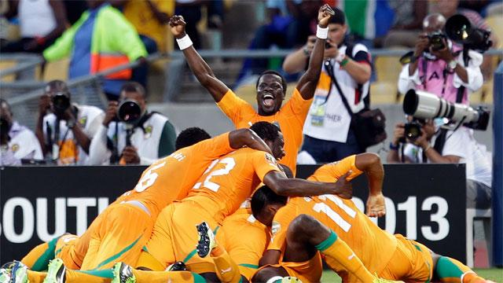
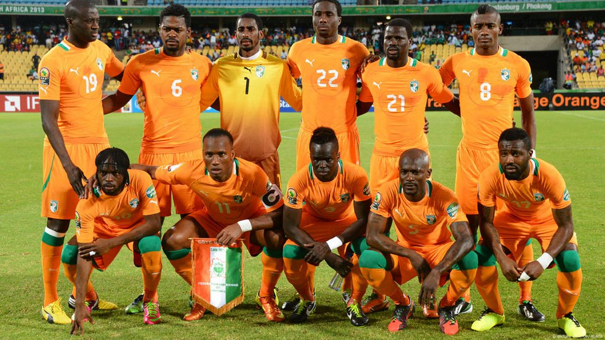

Ivory CoastThe Ivory Coast national football team (recognized as the Côte d'Ivoire by FIFA) represents Ivory Coast in men's international football. Nicknamed the Elephants, the team is managed by the Ivorian Football Federation (FIF).
-

Emblem
-

Nickname(s)
Les Éléphants
(The Elephants)
-
Association
Fédération Ivorienne de Football
FIF
-

Confederation
CAF
Africa
-

FIFA code
CIV
- 
Appearances
3
first in 2006
- 
Best result
Group Stage
2006, 2010, 2014
2006
-

Henri Michel
Head Coach
(France)
-

1. Jean-Jacques Tizié
Goalkeeper
Born - 7 September 1972
Aged 33
Caps 24
Club - Espérance de Tunis (Tunisia)
-

16. Gérard Gnanhouan
Goalkeeper
Born - 12 February 1979
Aged 27
Caps 6
Club - Montpellier (France)
-

23. Boubacar Barry
Goalkeeper
Born - 30 December 1979
Aged 26
Caps 6
Club - Beveren (Belgium)
-

3. Arthur Boka
Defender
Born - 2 April 1983
Aged 23
Caps 23
Club - Strasbourg (France)
-

4. Kolo Touré
Defender
Born - 19 March 1981
Aged 25
Caps 42
Club - Arsenal (England)
-

6. Blaise Kouassi
Defender
Born - 2 February 1975
Aged 31
Caps 36
Club - Troyes (France)
-

12. Abdoulaye Méïté
Defender
Born - 6 October 1980
Aged 25
Caps 18
Club - Marseille (France)
-

13. Marco Zoro
Defender
Born - 27 December 1983
Aged 22
Caps 13
Club - Messina (Italy)
-

17. Cyril Domoraud
Defender
Born - 22 July 1971
Aged 34
Caps 50
Club - Créteil (France)
-

20. Guy Demel
Defender
Born - 13 June 1981
Aged 24
Caps 7
Club - Hamburger SV (Germany)
-

21. Emmanuel Eboué
Defender
Born - 4 June 1983
Aged 23
Caps 11
Club - Arsenal (England)
-

2. Kanga Akalé
Midfielder
Born - 7 March 1981
Aged 25
Caps 22
Club - Auxerre (France)
-

5. Didier Zokora
Midfielder
Born - 14 December 1980
Aged 25
Caps 38
Club - Saint-Étienne (France)
-

7. Emerse Faé
Midfielder
Born - 24 January 1984
Aged 22
Caps 14
Club - Nantes (France)
-

8. Bonaventure Kalou
Midfielder
Born - 12 January 1978
Aged 28
Caps 49
Club - Paris Saint-Germain (France)
-

10. Gilles Yapi Yapo
Midfielder
Born - 13 January 1982
Aged 24
Caps 26
Club - Young Boys (Switzerland)
-

18. Abdul Kader Keïta
Midfielder
Born - 6 August 1981
Aged 24
Caps 26
Club - Lille (France)
-

19. Yaya Touré
Midfielder
Born - 13 March 1983
Aged 23
Caps 14
Club - Olympiacos (Greece)
-

22. Romaric
Midfielder
Born - 4 June 1983
Aged 23
Caps 8
Club - Le Mans (France)
-

9. Arouna Koné
Forward
Born - 11 November 1983
Aged 22
Caps 17
Club - PSV Eindhoven (Netherlands)
-

11. Didier Drogba
Forward
Born - 11 March 1978
Aged 28
Caps 32
Club - Chelsea (England)
-

14. Bakari Koné
Forward
Born - 17 September 1981
Aged 24
Caps 16
Club - Nice (France)
-

15. Aruna Dindane
Forward
Born - 26 November 1980
Aged 25
Caps 34
Club - Lens (France)